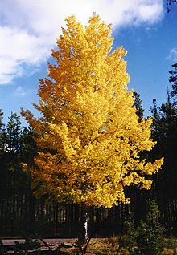

FAQ for exRNA
[TOC]
美好的回忆作文（一）
:sparkle: 生活中每一天
都有事情发生
- jifjeife
- jifejifje
- jifjeifje
- \
:sparkle:

这回忆能让我们成长，*能让我们知道*这一生该怎么去做。回忆用什么都换不回来，就像时间一样，回忆是美好的，**如果好的事情去回忆**，我们都快乐，如果坏的事情去回忆，那会觉得很难受。**记忆是一个宇宙**，永远装不完，但它会流失，如果没有了童心，那你童年的美好记忆将失去 *好吧，他说道* ？
jifjeijfeifjiej
jfiejifejifjiej
接着，我们又看到了长尾雉，长尾雉的尾巴非常长，它有很多漂亮的羽毛，看起来很华丽。我看到一只黄色的长尾雉，它的头上的毛是黑白相间的，脖子是黄色的，身上和尾巴上有黑，白，黄，红四种颜色，只见披着一身锦衣的它，一会儿从这边跳到那边，一会儿又从那边跳到这边，十分美丽可爱。
jifjeifjefjef

有趣的事，开心的事，悲伤的事。在童年的记忆里里有酸甜苦辣，或许童年就是一种食物，这种食物非常特殊，什么味道都有。而这些味道就是我们童年的美好回忆。回忆不管是苦的，
还是辣的，好的，还是坏的，
都是一种美好的回忆，
这回忆能让我们成长，能让我们知道这一生该怎么去做。回忆用什么都换不回来，就像时间一样，回忆是美好的，如果好的事情去回忆，我们都觉得很快乐，如果坏的事情去回忆，那会觉得很难受。记忆是一个宇宙，永远装不完，但它会流失，如果没有了童心，那你童年的美好记忆将失去。
有趣的事

，有趣的事，开心的事，悲伤的事。在童年的记忆里里有酸甜苦辣，或许童年就是一种食物，这种食物非常特殊，什么味道都有。而这些味道就是我们童年的美好回忆。回忆不管是苦的，还是辣的，好的，还是坏的，都是一种美好的回忆，这回忆能让我们成长，能让我们知道这一生该怎么去做。回忆用什么都换不回来，就像时间一样，回忆是美好的，如果好的事情去回忆，我们都觉得很快乐，如果坏的事情去回忆，那会觉得很难受。记忆是一个宇宙，永远装不完，但它会流失，如果没有了童心，那你童年的美好记忆将失去。
梦，是一种神奇的物质，在梦里，你能无所不能，在梦里，你一生的梦想，你一生的愿望都将实现。自己的梦，由自己控制，自己的梦想，也由自己控制。而自己梦想的东西、梦想的人物在自己的梦中出现，那感觉很不可思议，那种感觉，我希望我能一直拥有，可惜只有梦中才能出现奇迹。梦里的事物有些是随意做出来的，而有些是自己梦想的人物，自己梦想的情节。那是因为自己太喜爱了，最特别的梦想。在睡着之前脑子里一直在想，一直在思考，想着想着就睡着了，而做的美梦就是自己最大的梦想，或是一件特别的事情。在梦里回忆，那种感觉是说不出的，但存在于我们记忆的仓库里。
当我们长大时，童年的美好记忆会永远封存，那是因为时间永远回不来了，但是只要有纯洁的心、童年的梦想，时间就永远不会过去。梦的幻想，就是梦幻，梦想的幻景，用我们纯净的心，去追寻真理，用我们的童心，去追逐伟大的梦想！
美好的回忆作文（二）
回忆是美好的，每当看到那些在动物园拍摄的照片，我就想起那美好的一天。
那是一个星期天，爸爸带着我和弟弟去了郑州动物园。看到了美丽的鸟，可爱的猴子，熊猫，还有凶猛的老虎等等。而我最喜欢看的莫过于那些可爱的鸟儿了。
我们走进鸟苑，就看到许许多多美丽，可爱的鸟儿。
我先仔细的观察了虎皮鹦鹉，它们的身上有五彩缤纷的毛，有绿的，黑的，蓝的，黄的，白的等等，虎皮鹦鹉的背上有很多黑色的花纹，如虎皮一般，而且它还有弯钩似的嘴，我想这就是人们叫它虎皮鹦鹉的原因吧。虎皮鹦鹉很可爱，非常引人注目。
然后，我们去看孔雀，我们看到一只白孔雀，它的毛雪白雪白的，漂亮极了，它站在那儿，好像是一位高贵的公主，爸爸让我和弟弟站在它旁边照张相，留作记念。后来，爸爸又照了一张绿孔雀的相，美中不足的是它们都没有开屏。
接着，我们又看到了长尾雉，长尾雉的尾巴非常长，它有很多漂亮的羽毛，看起来很华丽。我看到一只黄色的长尾雉，它的头上的毛是黑白相间的，脖子是黄色的，身上和尾巴上有黑，白，黄，红四种颜色，只见披着一身锦衣的它，一会儿从这边跳到那边，一会儿又从那边跳到这边，十分美丽可爱。
那一天，我过得真快乐，因为我看到了许多可爱的美丽的鸟，为我的童年留下了美好的回忆。
美好的回忆作文（三）
在我的脑海里，珍藏着我小学生活的点点滴滴，它们总会在我的脑海中浮现，最让我记忆犹新的是三年级的一次比赛。
记得那一次，学校举行了长绳比赛，(www.lz13.cn)我们都怀着自信心和勇气。最让我们激动人心的时候到了，广播传来了一阵声音：“请三年级选手到操场上就位，进行长绳比赛。”我们来到了操场，首先会有30秒的准备时间，时间一过，裁判吹起哨子，每班的甩绳者便甩起了绳子，我们班的第一位选手冲了上去，跳了起来，双脚落地，以一个完美的姿势轻松地跃过。同学们在一旁数着“1、2、3。”又一次到了我，我冲了进去，不小心被绳子绊了一下，我像没了气的气球沮丧的低下了头，老师见了，便说：“没有关系，只要我们努力，我相信我们会成功的，加油！”我们听了，每个人又树立信心，一个又一个地跳了过去，当裁判说“停”时，我们一共跳了200多个。校长开始颁奖了，我们每个人都做好了心理准备，都在等待着听到自己班的成绩，校长面带笑容地说：“第一名的是三（4）班。”我们听到了这个成绩，都欢呼着，雀跃着，心里像吃了蜜一样甜。
虽然我的小学生活即将结束，但这次的长绳比赛却成了我美好的回忆！
exRNA: extra-cellular RNA
How many types of exRNAs?
exRNA (extra-cellular RNA) includes long and short RNAs, which can be derived from the whole plamsa/serum (cf-RNA: cell -free RNA), or enriched from the exosomes/EVs of plasma/serum (exoRNA).
- Long RNA (>200nt): mRNA (RNA coding for protein), lncRNA (long noncoding RNA), rRNA
- Small noncoding RNA (ncRNA) (20-30nt): miRNA, piRNA, siRNA
- Ohter noncoding RNA (ncRNA) (100-200nt): tRNA, Y RNA, snRNA, snoRNA, srp RNA, etc
RNA-seq
What is barcode and multiplex?
Answer: Multiplex sequencing allows large numbers of libraries to be pooled and sequenced simultaneously during a single run on a high-throughput instrument. Sample multiplexing is useful for many applications, from targeted panels to whole human genome sequencing.
Individual “barcode” sequences are added to each DNA fragment during next-generation sequencing (NGS) library preparation so that each read can be identified and sorted before the final data analysis. Pooling samples exponentially increases the number of samples analyzed in a single run, without drastically increasing cost or time.
Multiplex Sequencing Highlights
- Fast High-Throughput Strategy: Large sample numbers can be simultaneously sequenced during a single experiment
- Cost-Effective Method: Sample pooling improves productivity by reducing time and reagent use
- High-Quality Data: Accurate maintenance of read length of unknown sequences
- Simplified Analysis: Automatic sample identification with “barcodes” using Illumina data analysis software
Cons:
- Targets smaller than 500 bp are preferentially amplified by polymerases during PCR
Reference: